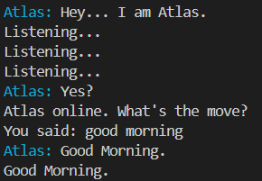
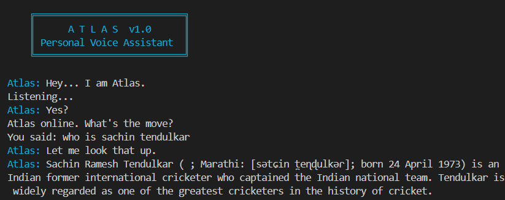

built in python, runs locally
A voice assistant that flows with you.
Atlas listens for a wake word, understands what you say, and responds in natural speech — no cloud dashboard, no account required.
// what it does
One wake word, six kinds of help.
"atlas"
The wake word. Stays silent until addressed directly — no accidental triggers from background noise.
"open youtube"
Website launcher for common destinations, opened instantly in your default browser.
"who is ada lovelace"
Wikipedia lookups, spoken back as a short summary — handles ambiguous queries gracefully.
"play [song]"
Local music playback from your own library, matched by voice.
"tell me a joke"
Some built-in personality — jokes, identity questions, casual back-and-forth.
"stop"
Ends the session cleanly.
// under the hood
How it works
1
Wait for the wake word
Atlas listens quietly in a loop, checking short audio snippets against the activation phrase.
2
Capture the command
Once activated, it opens a longer listening window and transcribes what you say.
3
Route the request
The transcribed text is matched against a command chain — site launching, Wikipedia, music, or a built-in response.
4
Speak the result
The response is converted to natural speech and played back, ready for the next command.
// see it for real
Running live in a terminal

$ wake word detected — atlas responds

$ processing a command

$ response spoken aloud
// built with
Tech stack
Python
speech_recognition
gTTS
pygame
wikipedia
requests
python-dotenv